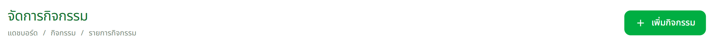
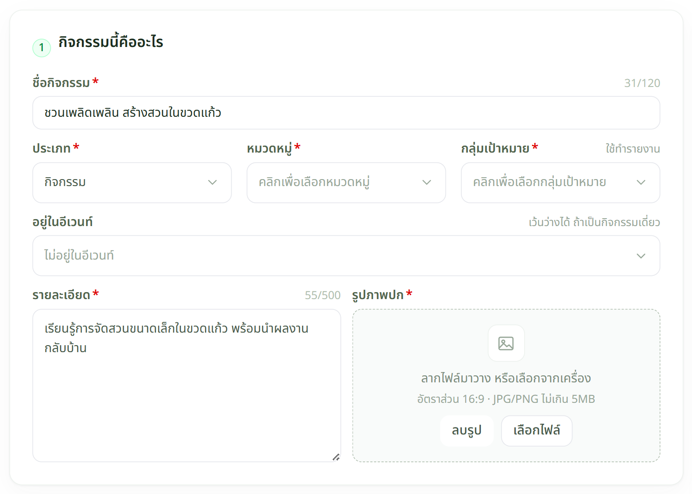
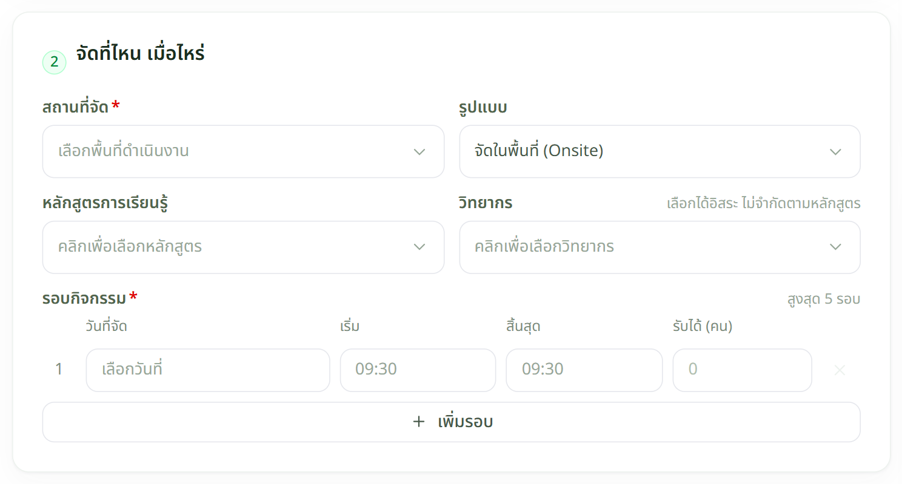
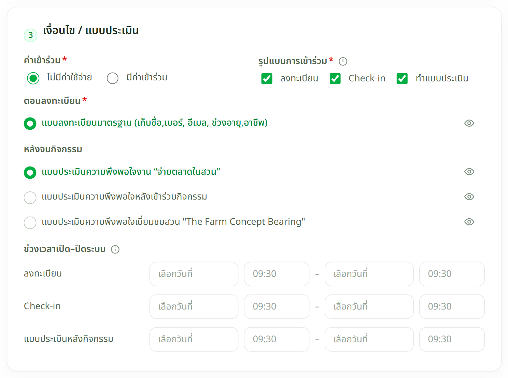
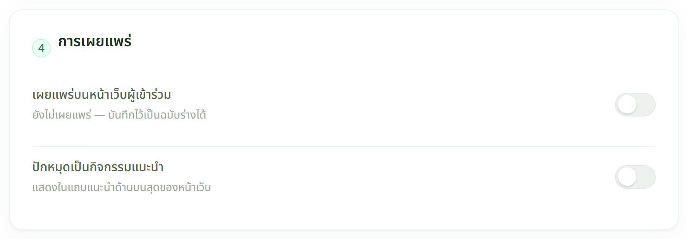
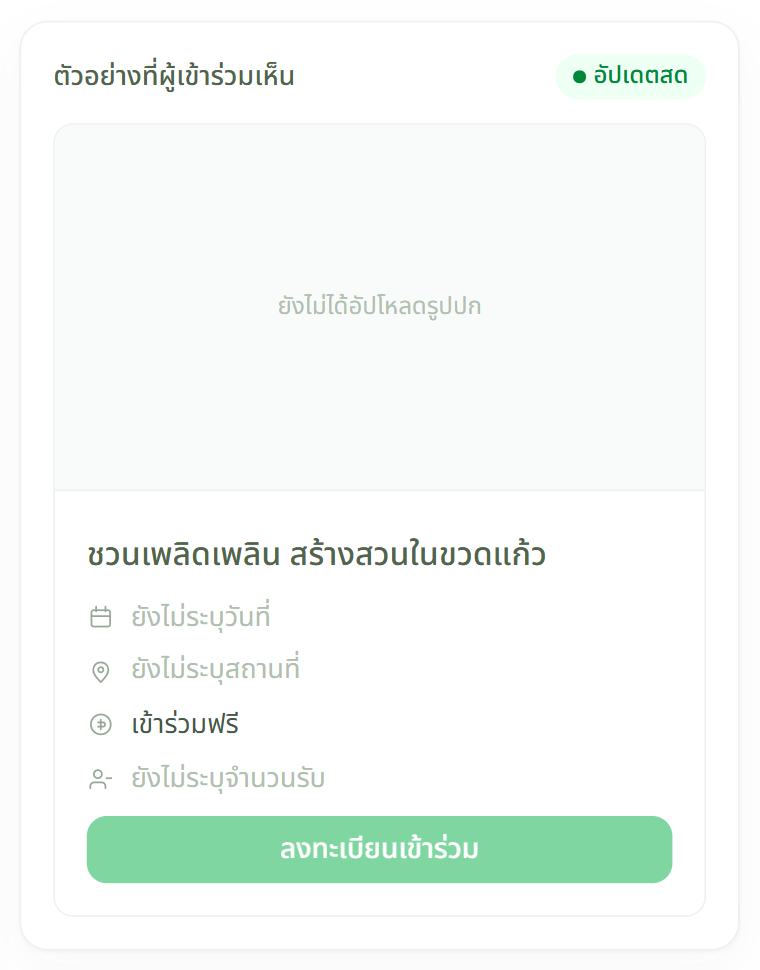
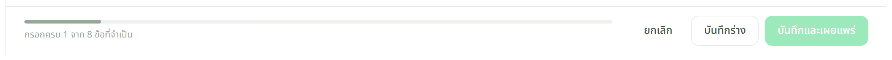

เจ้าหน้าที่
เปิดฟอร์ม

เจ้าหน้าที่
กรอกฟอร์ม 4 ส่วน




ไม่ต้องกรอกครบในครั้งเดียว — กรอกชื่อกิจกรรมอย่างเดียวก็กด บันทึกร่าง เก็บไว้ก่อนได้
เจ้าหน้าที่
ตรวจแล้วบันทึก


ปุ่ม บันทึกและเผยแพร่ จะกดไม่ได้จนกว่าจะกรอกช่องที่มีดอกจันครบ — ถ้ากดไม่ได้ ให้เลื่อนหาช่องที่ยังว่างอยู่
เผยแพร่แล้วเกิดอะไรขึ้น
| ระบบทำให้อัตโนมัติ | เอาไปใช้ที่ไหน |
|---|---|
| กิจกรรมขึ้นหน้าเว็บสาธารณะ | ผู้เข้าร่วมเห็นและกดลงทะเบียนได้ทันที |
| สร้าง QR ให้ 3 ชุด | QR ลงทะเบียน · QR เช็กอิน · QR แบบประเมิน — ดาวน์โหลดได้ที่หน้ารายละเอียดกิจกรรม |
| เปิดหน้า Check-in ให้ | ใช้หน้างานตามวันเวลาที่ตั้งไว้ — ดูวิธีใช้ที่ เช็กอินหน้างาน |
เจอปัญหาให้ทำอย่างไร
| อาการ | ให้ทำ |
|---|---|
| กดบันทึกและเผยแพร่ไม่ได้ | ยังกรอกช่องบังคับไม่ครบ หรือรอบกิจกรรมยังไม่ได้ใส่วันที่ |
| อัปโหลดรูปปกไม่ผ่าน | ต้องเป็น JPG หรือ PNG ขนาดไม่เกิน 5MB · สัดส่วน 16:9 จะขึ้นสวยที่สุด |
| ไม่มีช่องเลือกแบบประเมิน | ยังไม่ได้ติ๊ก "ทำแบบประเมิน" ในส่วนที่ 3 |
| ลบกิจกรรมไม่ได้ | มีคนลงทะเบียนไว้แล้ว — ให้เปลี่ยนสถานะเป็น "ยกเลิก" แทน |